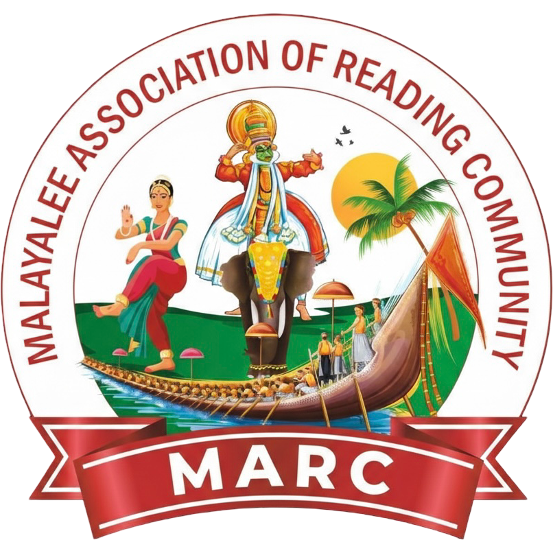
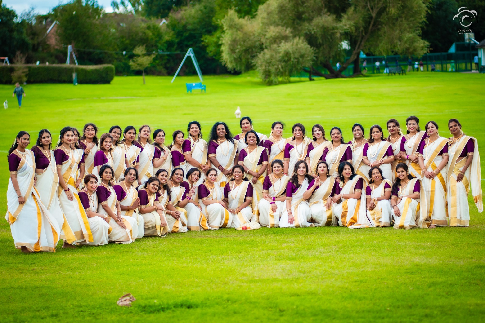
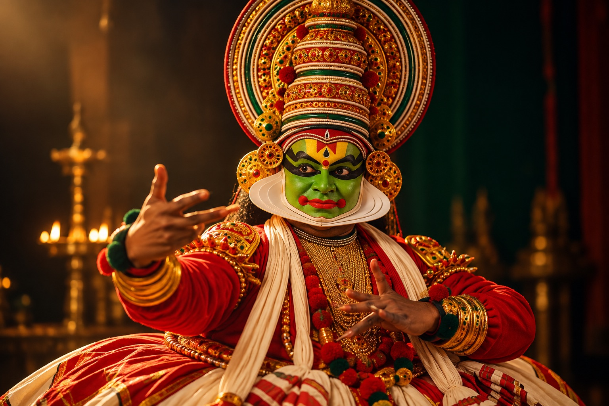
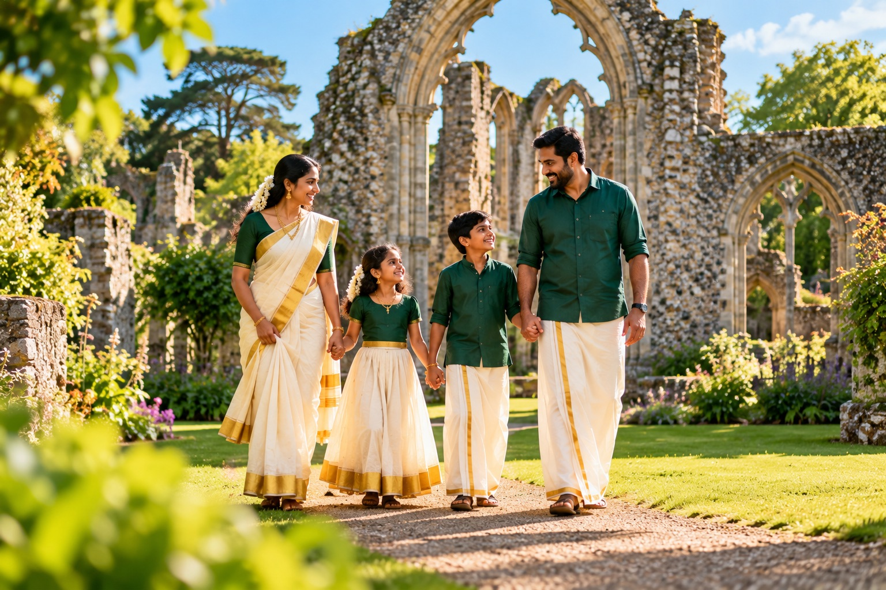
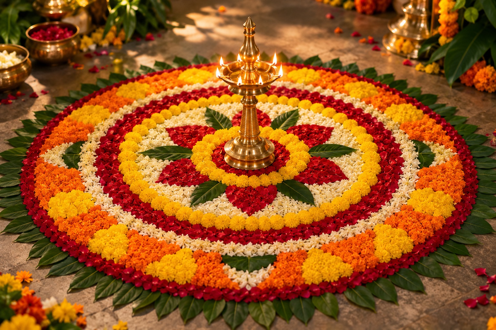
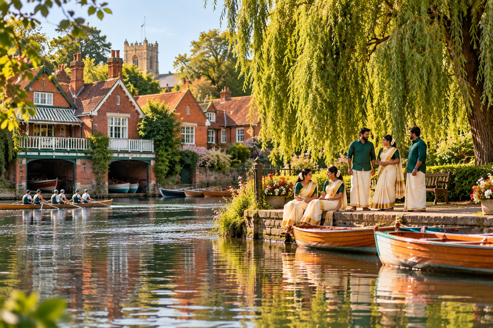
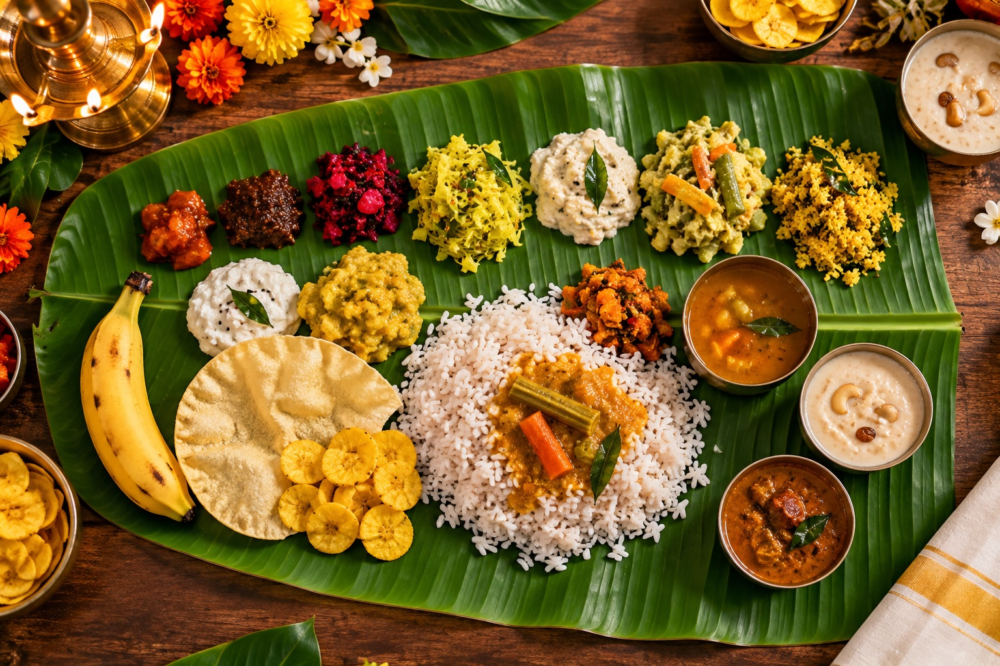
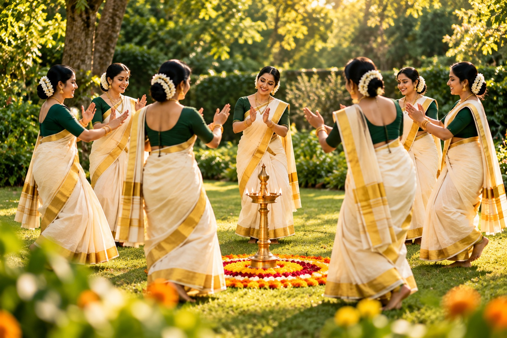
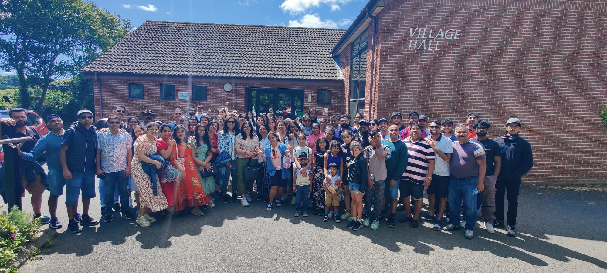

MARC Reading
Malayalee Association of Reading Community – connecting hearts and celebrating culture among Malayalee families in Reading, UK.

- 85+
- Families
- 320+
- Members
- 85+
- School-going children
- 60+
- Youth members
About MARC
MARC – Malayalee Association of Reading Community was established in the early 2010s to fulfil a long-cherished aspiration of the Malayalee community in Reading, United Kingdom.
Since its inception, MARC has operated with integrity, inclusiveness, and strong social responsibility, providing a structured platform for Malayalees in and around Reading to connect, collaborate, preserve our moral, social, cultural, educational, literary, and artistic heritage, while actively integrating with UK culture and community life.
Today, MARC is a vibrant and forward-looking community with 85+ families, 320+ members, 85+ school-going children, and 60+ youth members.
Read Our Story
Kerala roots, Reading home
We carry the colours, flavours and festivals of Kerala into our life together in Reading.






What We Do
MARC provides a structured platform for Malayalee families in and around Reading to connect, collaborate, and cultivate community life. We organise programmes that help preserve our cultural identity while embracing the opportunities of life in the UK.
Through these activities, MARC supports a sustainable, self-strengthening community that benefits both present and future generations — while staying rooted in our heritage and contributing positively to wider society.
Watch our videos- Cultural Cultural programmes and festival celebrations
- Educational Educational, literary, and arts initiatives
- Family Family get-togethers and community gatherings
- Youth Youth and children’s cultural activities
- Sports Sports and athletic events for all age groups
- Charity Charity and social responsibility initiatives
- Go Green Initiatives promoting sustainability and environmental awareness
Our Community Values
- Mutual Respect building trust and harmony
- Active Inclusivity welcoming everyone
- Responsible Citizenship giving back to society
- Cultural Connection celebrating our Kerala heritage

Join Us
MARC brings together Malayalee families in Reading who share common values and a sense of community. Membership is limited by venue and logistical capacity, so we can provide a safe, high-quality experience for everyone. New members are welcomed when space becomes available.
Our Sponsors
We thank our sponsors for their valuable support.


Partnership & Sponsorship
We are actively seeking long-term partnerships and event sponsors who wish to engage with a vibrant, family-focused community.